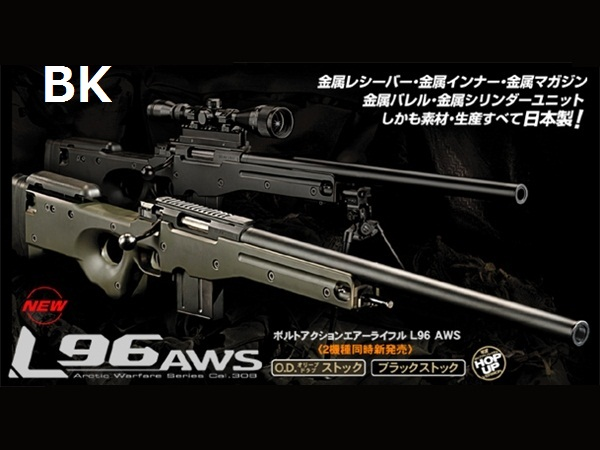

サバゲーにおいてのスナイパーライフル

サイトは人によって好みの倍率が分かれるが自分は６倍を好んで使う。スナイパーライフルは前線に出ることなく後方で敵に威嚇射撃をしたり、狙い撃ちをすることに特化しており、距離が離れれば離れるほど弾が落ちていったりBB弾なので風の影響を受けやすい。室内サバゲーでは、フィールド次第ではありますがわずかな隙間などをねらって狙撃をするなど役割は果たせますがよくバリケードで砲身をぶつけるので小回りがきかないのと銃に最新の注意を払ってしまいがち。実際サバゲーではゲーム開始から３分ぐらいは結構暇であり、終盤になればなるほど出番が増えると思う。基本的には、０．２５ｇのBB弾が使用されることが多い。値段は国内メーカーだと安くて５万円弱で高いもので１０万円を超えるものもある。